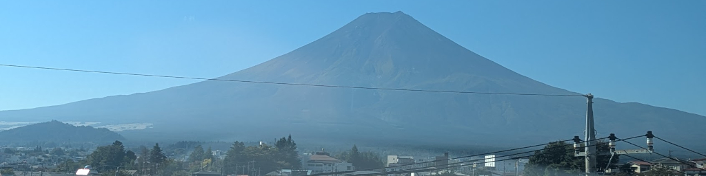

October 8 - 12, 2026 |
||||
|
All through 2025, our friends Teresa and Steve were wanting to plan a Japan cruise, and in December, Teresa found
a suitable one. Though almost a year away, scheduled to sail in October of 2026, the Delta Cruise (from Delta Airlines' Cruises),
"13 Night Circle Japan", would begin and end in Tokyo on Holland America's Westerdam. The trip would
encircle Japan, with one stop in South Korea. We liked the itinerary, so, despite it being so far off, we all
agreed it should be our next cruise, and on December 18th, we all signed up for it. We also added three days in Tokyo before the cruise
started, where we would be staying at the remm plus (sic) Ginza Hotel on the Ginza.
Teresa did a lot of research on the trip which we ended up booking through Delta Cruises (a
Delta Airlines company). We dealt with a very helpful agent, Tina Aiello, who helped us book the cruise and answered
all sorts of questions for us. Flights looked like they might be a problem: there was only one direct flight from Minneapolis
to Tokyo (no one wanted a non-direct flight with one or more layovers along the route), and it was expensive, but in order to
secure seats on it, we bought tickets in June. Teresa also worked on finding interesting
shore excursions to round out our trip preparation. Much thanks to Teresa!
On the morning of October 7th, we left Rochester en route to Tokyo to begin our journey, arriving
there on the afternoon of the 8th around 1:00 PM
noteDue to the time zone differences and the 13 hour flight, we lost
almost a full day. .
Here's a map of our planned itinerary, beginning and ending in Tokyo. Click on it to see more details.
We were all quite excited about it.
Unfortunately, fate stepped in and everything fell apart for Mei-O and me. Click here
to read the complete story.
|
||||
| Initial draft: December 19th, 2025 Published: October 29, 2026 |